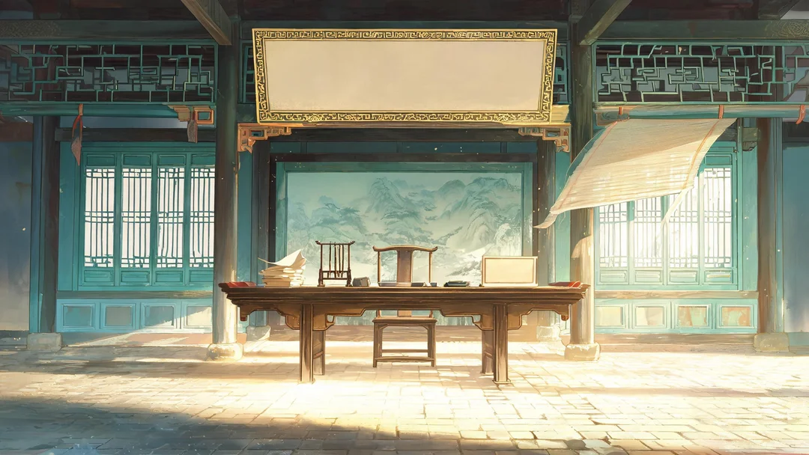

新风格叠上真实 UI 是什么样子
1280×720 三屏 · 背景=选定图 · 红虚线框=人工读网格读出的可写面 ·
本页不碰 行旅.js / 行旅.css，只验风格

自讼堂
子瞻
这屏只是把新风格的背景按真实摆法叠一遍，用来看光和 UI 打不打架；字与数值都是占位，不代表最终文案。
判决前 · 堂上
黄州 · 堂上 · 可写面 0.33 / 0.07 / 0.35 / 0.15 · 匾面干净，四字标题正好占满，余量约两成
净洗铛
体
78银
420意
平才
63学
41
子瞻
这屏只是把新风格的背景按真实摆法叠一遍，用来看光和 UI 打不打架；字与数值都是占位，不代表最终文案。
第一次做饭
黄州 · 灶前 · 可写面 0.02 / 0.12 / 0.25 / 0.40 · 匾面干净，四字标题正好占满，余量约两成
食槟榔
体
78银
420意
平才
63学
41
子瞻
这屏只是把新风格的背景按真实摆法叠一遍，用来看光和 UI 打不打架；字与数值都是占位，不代表最终文案。
午后 · 街头
儋州 · 黎市 · 可写面 0.30 / 0.12 / 0.40 / 0.30 · 中间接近纯白，深色字压得住，但**别放浅色字**